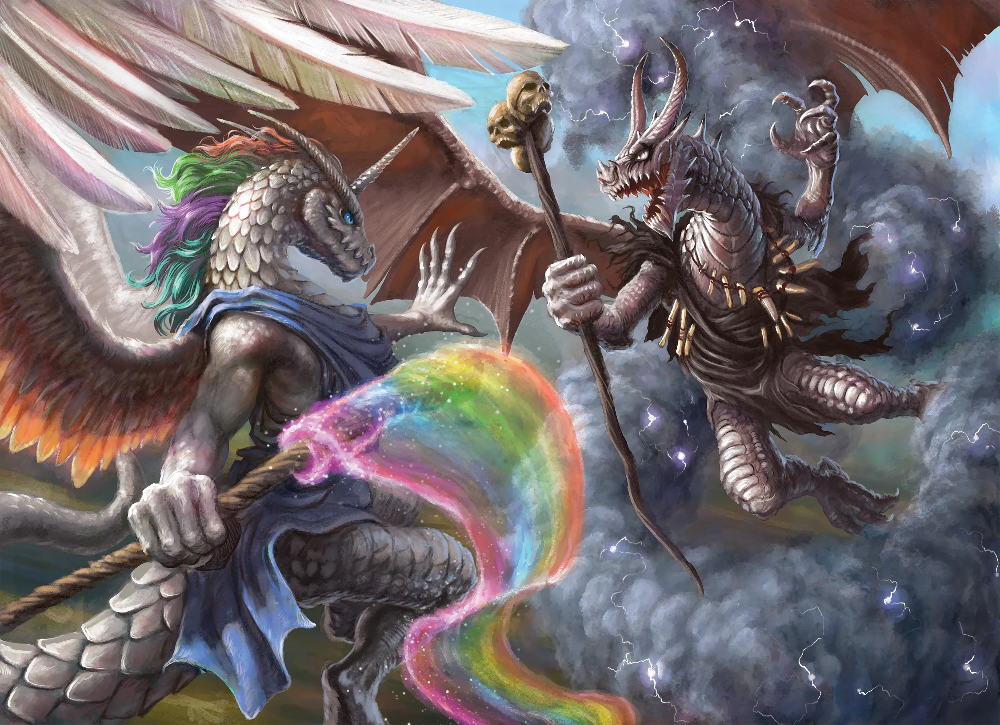
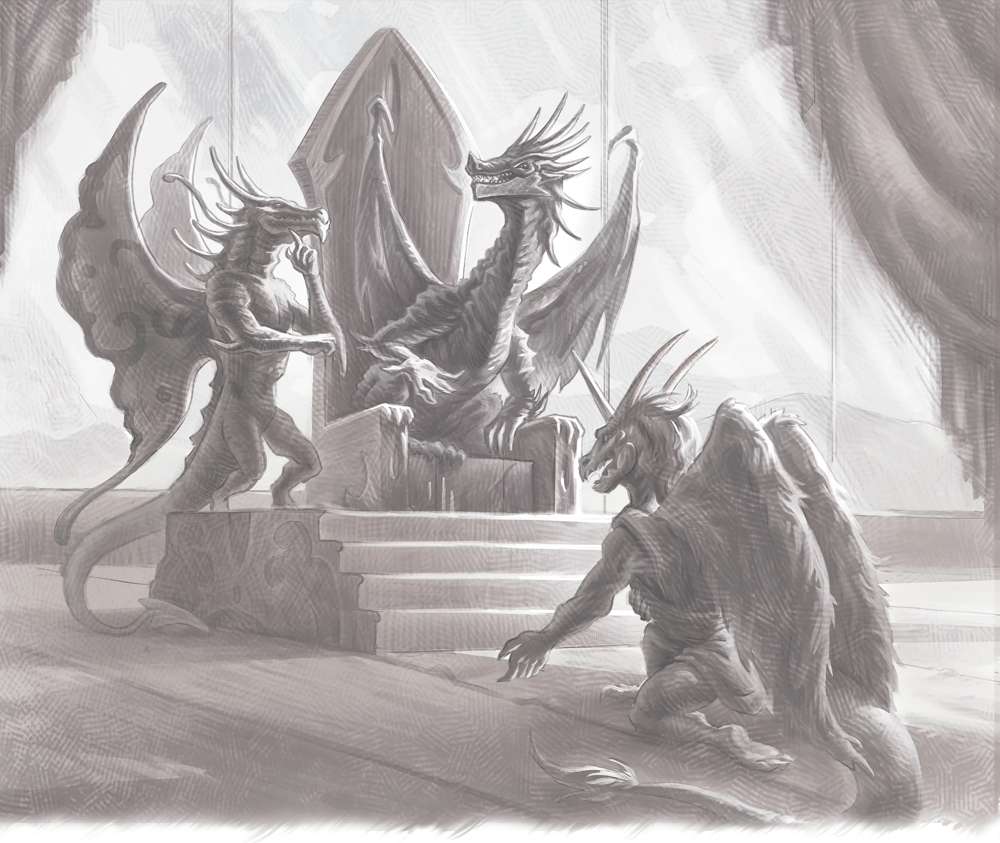
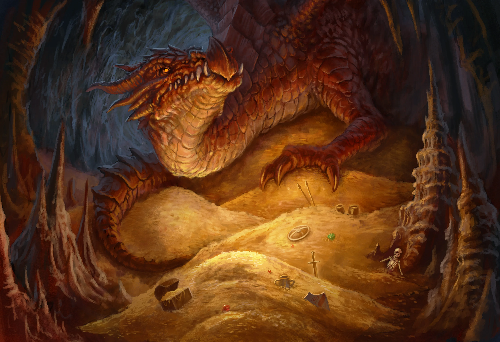
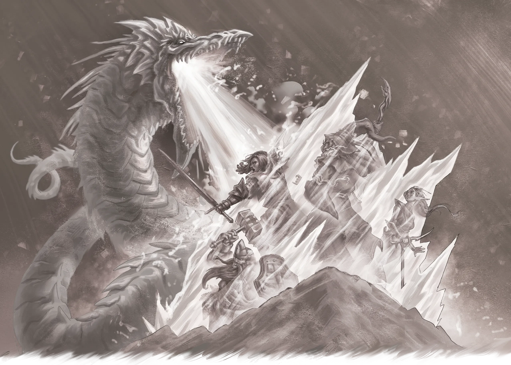

尽管我在撰写这份报告之初满怀热忱地率先介绍了仙境与永光仙灵龙，但现在也该好好谈一谈传统派仙灵龙了。虽然我的关注重心主要放在永光龙身上，但每当我们深入探究一个新的龙族谱系时，详尽记录传统派巨龙的方方面面同样至关重要。从本质上讲，永光龙正是作为传统派巨龙的对照面而存在的；因此，若想真正参透其中任何一方，就必须透彻理解这组对照的两面。不仅如此，我们的巨龙霸主瑞扎尼瓦什也要求我尽可能发掘关于仙灵龙的一切情报，而不是一味纵容我个人的学术热忱、把这份报告变成只聚焦于永光仙灵龙的私人偏爱课题。
所幸，我本人在仙境的游历让我结识了形形色色的传统派仙灵龙，它们娓娓道来的故事也揭示了更多珍贵的情报。其中一个令我格外着迷的故事涉及仙灵龙卡凯恩，以至于我专门寻访了它，想从他的视角听听同一段往事。幸好我这么做了，因为卡凯恩亲口讲述的版本与其他人口中的转述大相径庭。请记住，亲爱的读者：每当有人讲述一个故事，那个故事便会吸纳讲述者的本质，在描绘表面主题的同时，也同样深刻地折射出讲述者自身的模样。
秉持着上述种种考量，我将自己发掘出的这段故事呈献给你品鉴。我将从卡凯恩以及仙境诸位传统派巨龙那里听来的不同说法融汇整理在了一起。如此一来，我便成了为你讲故事的人，因此也不可避免地会在这篇故事的字里行间留下我自己的印记。慧眼如炬的读者啊，不知当你审视我这番记述的细节与脉络时，又会从中发现多少属于我的影子呢？

即便在最风平浪静的时节，仙境世界也往往处于一种脆弱的平衡之中――在这里，故事会化为活生生的现实，强大精类的意志会将周遭的天地扭曲塑造成座座王庭与领地。正因如此，该位面可塑多变的特质使其极易受到强大魔法现象的干扰。其中令人难忘的一桩事件，后来还得了个听起来颇为夸张的名号――“厄运回响”。
对仙境的居民而言，整场灾祸来得毫无征兆。故事与领地以邪恶扭曲的方式骤然异变，仿佛翻腾的腐化气泡接连爆裂，篡改着周遭的仙境现实。不用说，当地居民对这些突如其来的混乱区域绝无好感，反应从惊骇恐慌到雷霆震怒不一而足。当时，卡凯恩正率领他那支五花八门的永光仙灵龙小队前去调查其中一处腐化异变，那时他们还以为这只是一起孤立事件――毕竟异象才刚刚初现端倪，他们尚未将零散的线索拼凑出全貌。
卡凯恩一行成功找到了那处异变区域，击败了盘踞其间的数只腐化梦魇造物，甚至逆转了那道厄运回响的影响；然而等他们凯旋归来时，附近却又传来了好几起类似事件的报告。意识到单凭自己的小队根本无力应对后，卡凯恩一行便前往当地的精类王庭，寻找愿意倾听他们陈词、并协助抗击这场不断蔓延的灾疫的仙灵龙。
尽管许多王庭都不肯把一群流浪永光龙的话当回事，但他们却在索拉克萨娜尔那里遇到了一个难得的例外――那是一条身边簇拥着一群皮克精龙弄臣的王庭龙。说实话，我怀疑索拉克萨娜尔当时未必真拿得准该不该相信卡凯恩，但以她那出了名的幽默感，就算卡凯恩一行最终弄错了，她大概也只是觉得这些骚乱莫名有些滑稽有趣罢了。不当面问她，我们自然无从知晓真相――而且就算问了，也得指望她肯给个痛快直白的回答才行。
拉拢一座王庭加入计划后，卡凯恩得以顺藤摸瓜地逐一争取其他王庭的支持；最终如同推倒的多米诺骨牌一般，当地绝大多数王庭都联合起来，共同通报各自领地内出现的回响异象。卡凯恩队里的诡谑龙同伴甚至设法说服了一座由诡谑龙与捣蛋鬼组成的王庭出手相助――至于它们帮忙的方式，则是四处布设陷阱、制造混乱，企图给那些“厄运回响”来上一场恶作剧。
虽然捣蛋鬼这套把戏乍看荒唐儿戏，但在仙境之中，这类异想天开的尝试偏偏极有可能歪打正着地奏效――于是，率先取得突破的还真是这群诡谑龙。骚乱的分布规律本就表明这些回响并非随机发生，而捣蛋鬼布下的陷阱更是险些逮住一个实体目标，从而进一步揭开了真相：整场异象源自同一个源头，而且那是一个活生生的生物。
真相水落石出：原来是一条来自凡世、本怀善意的厄运龙在幻象中预见了仙境将有惨剧发生，便踏入这片神秘的精类世界，打算向当地王庭警示潜在的危机。然而，还没等它找到任何仙灵龙说明原委，一只以噩梦与恐惧为食的精类――惧妖――便盯上了这条厄运龙，为了取乐而肆意放大他心中所有的焦虑。随着厄运龙深陷焦虑无法自拔，那些恐惧与灾厄在它的脑海中变得愈发真实，直至最终在仙境的现实中具现成形，随着它的旅途一路如影随形地席卷大地。仙境的法则便是如此奇妙而莫测。
当然，这条厄运龙根本不知道自己内心的焦虑正是那些可怕回响的源头。相反，它还以为自己只是接连撞上了幻象中预示的种种灾劫――也就是它原本特地赶来警告众人的那些灾祸。在焦虑与恐惧的吞噬下，它不由自主地将周遭其他生物都看作了企图屠戮自己的可怖怪物，结果违背了初衷，迟迟无法直接前往各大王庭报信。
顺着几条线索一路追查，卡凯恩终于找到了那条厄运龙，并在狂风暴雨的苍穹中与心神崩溃的厄运龙展开决斗。他挥舞手中的彩虹法杖，试图拨开抑郁与焦虑的阴霾，将对方的心灵从惧妖种下的恐惧中解救出来。然而，回响的力量令这条平日里性情温和的厄运龙变得强横无比，远非卡凯恩单凭一己之力所能击败。万幸的是，附近正好有一座魅心龙王庭，它们出手相助，合力安抚厄运龙狂乱的心绪。正当卡凯恩节节败退、险象环生之际，厄运龙的攻势渐渐不再那般狂躁猛烈，直至最后在卡凯恩即将倒下的前一刻彻底恢复了理智。
这是一个唯有在童话绘本般的仙境国度才可能上演的故事――在那里，我们对自己编织的叙事与意志的力量真能化作现实。这也是我所见过寥寥无几的、五种血统的传统派仙灵龙携手同心奔赴同一目标的实例之一；毕竟在通常情况下，指望诡谑龙配合行动纯属徒劳，因为它们向来唯恐天下不乱、专靠制造混乱与不和为乐。明智的读者啊，请尽管从这则故事中汲取你所见所得吧；而当你再次将它讲述给他人时，它又将在重述中融入属于你的一缕神韵，焕发出全新的生机！
――永光贤者卡利赞德雷克斯
本章收录了丰富的仙灵龙数据面板，供 GM 为战役增添更多童话般的奇趣闹剧与绘本式的戏剧冲突。在推进中的战役里，仙灵龙能够胜任形形色色的定位――从强敌到盟友、从赞助人到劲敌，乃至从挚爱亲朋到贯穿战役的幕后大反派。每种血统的仙灵龙将按顺序依次登场，并附有雏龙、青年龙、成年龙、远古龙和太古龙的完整数据面板。首先登场的是天角龙，随后依次是魅心龙、王庭龙、诡谑龙，最后则是皮克精龙。
| 龙种分类 | 怪物数据卡 |
|---|---|
| 天角龙 Alicorn Dragon | 天角龙雏龙、青年天角龙、青年天角龙（施法者）、成年天角龙、成年天角龙（施法者）、远古天角龙、远古天角龙（施法者）、太古天角龙、太古天角龙（施法者） |
| 魅心龙 Allure Dragon | 魅心龙雏龙、青年魅心龙、青年魅心龙（施法者）、成年魅心龙、成年魅心龙（施法者）、远古魅心龙、远古魅心龙（施法者）、太古魅心龙、太古魅心龙（施法者） |
| 王庭龙 Court Dragon | 王庭龙雏龙、青年王庭龙、青年王庭龙（施法者）、成年王庭龙、成年王庭龙（施法者）、远古王庭龙、远古王庭龙（施法者）、太古王庭龙、太古王庭龙（施法者） |
| 诡谑龙 Mischief Dragon | 诡谑龙雏龙、青年诡谑龙、青年诡谑龙（施法者）、成年诡谑龙、成年诡谑龙（施法者）、远古诡谑龙、远古诡谑龙（施法者）、太古诡谑龙、太古诡谑龙（施法者） |
| 皮克精龙 Pixie Dragon | 皮克精龙雏龙、青年皮克精龙、青年皮克精龙（施法者）、成年皮克精龙、成年皮克精龙（施法者）、远古皮克精龙、远古皮克精龙（施法者）、太古皮克精龙、太古皮克精龙（施法者） |

长期以来，永恒之光仪式一直是我最核心的研究课题，也是我在学界独占鳌头的专精领域。近来，应巨龙霸主瑞扎尼瓦什之请，我亦在深入探寻世界各地被遗忘的巨龙家族之秘。然而，还有一个课题始终令我心驰神往；慷慨的读者们，我欣喜万分地向诸位宣告，正因有了你们璀璨夺目的支持与鼓励，我才得以追逐这一梦想，为我过往的研究硕果再添华章。而今天我满怀欣喜呈献给诸位的这一课题，便是――太古龙。
无人不曾听闻它们的威名：它们是龙族的巅峰，是一切传统派巨龙梦寐以求的至高境界。唯有历经数千载漫长岁月、不断聚敛力量与财宝、在实力与智慧上日益精进之后，一头巨龙方能登临那座绝顶。它们是最强大的凡人英雄史诗中的终极强敌，是一视同仁地摧垮万物的真正天灾伟力，是无可逾越之存在的象征。然而，既然世间关于太古龙的民间传说、故事、歌谣与史诗早已汗牛充栋，我们对它们的真实了解却如此匮乏，这难道不令人大感意外吗？
乍看之下你或许自以为很了解它们，但即便如此，你也务必继续读下去，一探其中的真相。这里头可藏着门道呢。因为你看，世人皆知太古龙之名，却无人真正了解太古龙之实――而这绝非巧合，恰恰正是太古龙们一直以来求之不得的结果。这便是我在研究中揭开的隐秘真相：倘若让天下人都摸清你真实的长处与弱点，你根本不可能活到那般古老而强横的境界。身为太古龙，只要让潜在的挑战者明白你强得深不可测、从而在动念之前便知难而退就足够了；至于在此之外，最好别让他们知道你究竟会在何时、以何种方式出击，更别让他们知晓击败你的最佳良策。
正因如此，太古龙们非但默许、甚至还会暗中鼓励世人传唱夸大其事迹的传说，同时将有关自身真实实力的记述严密封锁。这完全合乎情理：我们总喜欢说某个短寿的凡人“老死了”，可实际上，他们不过是日渐衰弱易损，与此同时，每过一年都有一定概率遭遇某种摧垮健康的变故而丧命。谁也逃不过时间之沙，更逃不过残酷的数学铁律――只要你每年都有一定概率死于疾病，那么用不了多久，死亡就会变成统计学上的必然。
在这一点上，我们巨龙与凡人截然不同。岁月只会令凡人衰老脆弱，直至最终被时间吞没于永恒的黑暗怀抱之中；而我们巨龙只会随岁月流逝愈发强大。然而，除去健康衰竭之外，同样的数学规律依然适用于其他死因。倘若一头巨龙每年因其他原因――比如遭到冷酷嗜血的入室凶徒暴力袭击――而丧命的概率仅仅只有百分之一，那么几乎就不会有任何巨龙能活过自己的第一个千年，幸存率甚至不足两万分之一！既然如此，最终真正能活到成为太古龙的，清一色都是最精明谨慎的智者、自幼便强横得超乎常理的异类，或是懂得操纵外界预期从而对袭击者占据上风的老手，这又有什么好奇怪的呢？
而正是这群多疑到极点的少数派，牢牢把控着世人获取我们情报的渠道。向整个世界定义何为太古龙“真相”的，恰恰是它们自己。事情便是这样发展到了如今的地步：极少有编年史、图鉴或怪物志胆敢尝试收录太古龙的资料；哪怕偶有涉猎，也往往按照太古龙自己散布的口径，不动声色地低估太古龙的真实威能，以此确保那些自命不凡的入室窃贼小觑太古龙的实力，进而在毫无防备之下踏入战场。他们满以为迎接自己的会是一场虽艰难却有胜算的恶仗，甚至是一场轻松的胜利；殊不知等待他们的，轻则是一场九死一生的绝望逃亡，重则是沦为太古龙爪下瞬息灭顶的屠戮亡魂。这群残暴凶徒口中所谓的又一段“英雄之旅”就此落幕，化作太古龙不断书写的不朽传奇里又一行微不足道的注脚。
有了上述铺垫便不难理解，太古龙们的重重防备意味着我必须付出远超以往的心血，才能搜集到有关世间各色太古龙的真实可靠情报。但平心而论，每一头太古龙都各有差异，因此倘若你有幸（无论吉凶，尽管通常是凶多吉少）遇上一头，它的实际表现未必与我的描述分毫不差。正因如此，我设法搜集了更多关于几头特定太古龙的详尽情报――当然，这让我个人冒了极大的生命危险。
亲爱的读者，在你把我好不容易搜集到的太古龙生平资料（此处指的是一头太古蓝龙与一头太古红龙）奉为圭臬之前，我恳请你先想一想“这本著作正握在你手中”这一事实本身。那两头太古龙十有八九已经察觉了本书的问世；按常理推断，它们很可能早已改换了巢穴的防御布置，甚至干脆搬去了截然不同的新址，只把原本的旧巢大体原封不动地留在原地――唯独在尽头把财宝换成了一座必死陷阱。至少，倘若易地而处，我一定会这么干。
把这些警告交代清楚之后，我想与你探讨一下我的研究方法，我的读者。作为一个整体而言，色彩太古龙是我最难追踪并记录归档的一群研究对象。诚然，某些其他家族的太古龙个体追查起来难度更高（甚至高得多），但没有任何一个巨龙家族整体上像色彩龙这般好斗凶悍、难以接近。或许正因如此，尽管色彩太古龙在太古龙的实力榜上充其量只能排在中游，它们的形象却如此深入人心、令人难忘。当然，各大巨龙家族之间的差距其实微乎其微；但在金属龙、原初龙、皇权龙等其他巨龙家族里，许多家族在整体实力上确实略胜毫厘――各自都拥有至少一种能在大多数一对一单挑中击败红龙的成员。
尽管我所研究的色彩太古龙格外狡诈善变，总爱在寥寥几粒真相中肆意掺杂连篇谎言，但我还是凭借自身的巨龙身份，以及对龙族深厚而渊博的学识，从夸大其词与自私谎言的汪洋大海中筛出了那些弥足珍贵的真知。我将这番严谨研究的全部成果提炼浓缩，编纂成我力所能及范围内最通俗易读、也最切实有用的指南，献给其他有志于深入探究太古龙及其隐秘真相的学者同仁。
至于那些四处流窜、物色下一处洗劫目标的杀人强盗团伙――本文可不是写给你们看的，尽管我极不情愿地承认，你们或许会觉得其中某些章节相当实用。即便明知你们根本不会听劝，我还是要客气地请你们拿开脏手。相反，这篇文献献给那些敢于探寻至强巨龙隐秘知识的追梦者――或许，也献给那些在深夜里辗转反侧、琢磨着“要是这两头太古龙打起来究竟谁会赢”的好奇灵魂。
――永光贤者卡利赞德雷克斯
正如卡利赞德雷克斯在手记中所言，本附录探讨的是与全书其余部分独立开来的另一课题――摘自卡利赞德雷克斯的补充研究手稿，并随同他的主报告一并呈交给了巨龙霸主瑞扎尼瓦什。本篇不再聚焦仙灵龙，而是介绍色彩太古龙――经典色彩龙家族中最强大、最古老的巨龙。其中，太古蓝龙与太古红龙更配有扩展专篇，详尽记述了这两类太古龙中的特定传奇个体，并附有非常适合用于开展相关太古龙冒险的巢穴地图！

| 龙种分类 | 怪物数据卡 |
|---|---|
| 太古黑龙 Black Dragon Great Wyrm | 太古黑龙、太古黑龙（施法者） |
| 太古蓝龙 Blue Dragon Great Wyrm | 太古蓝龙、太古蓝龙（施法者） |
| 太古绿龙 Green Dragon Great Wyrm | 太古绿龙、太古绿龙（施法者） |
| 太古红龙 Red Dragon Great Wyrm | 太古红龙、太古红龙（施法者） |
| 太古白龙 White Dragon Great Wyrm | 太古白龙、太古白龙（施法者） |